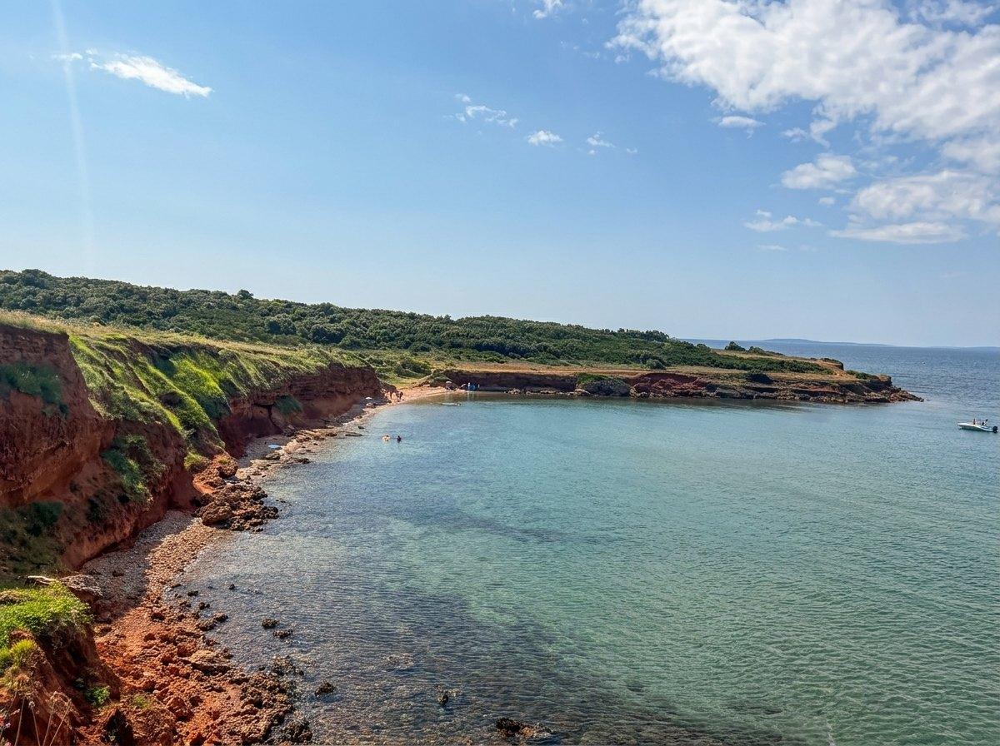
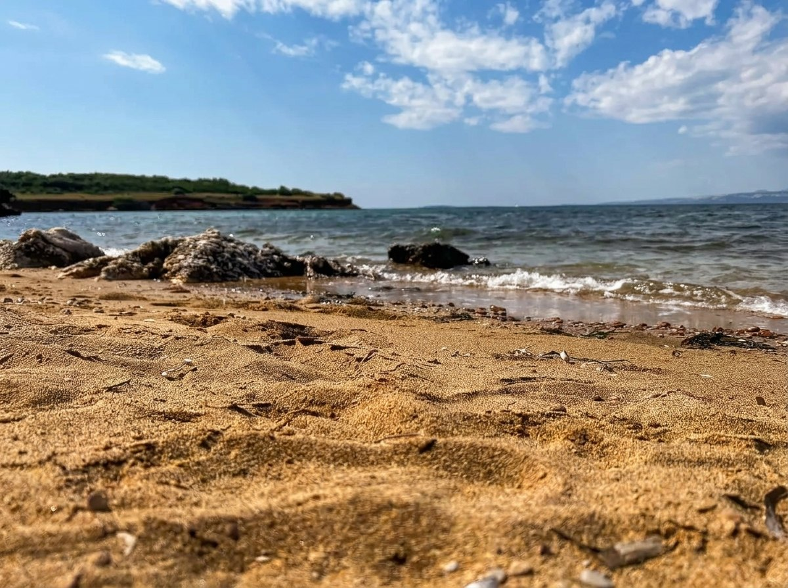
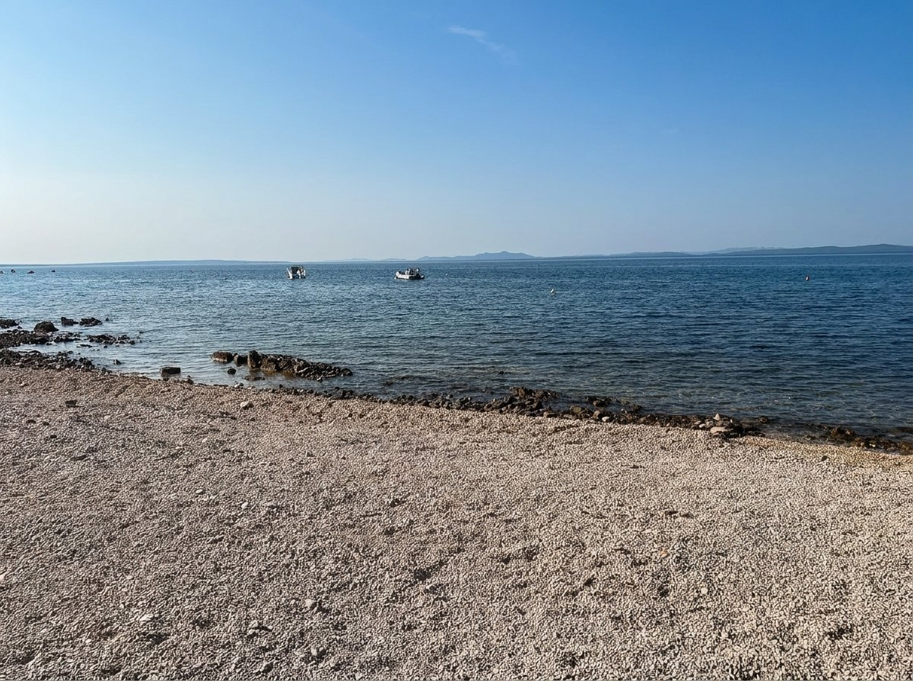
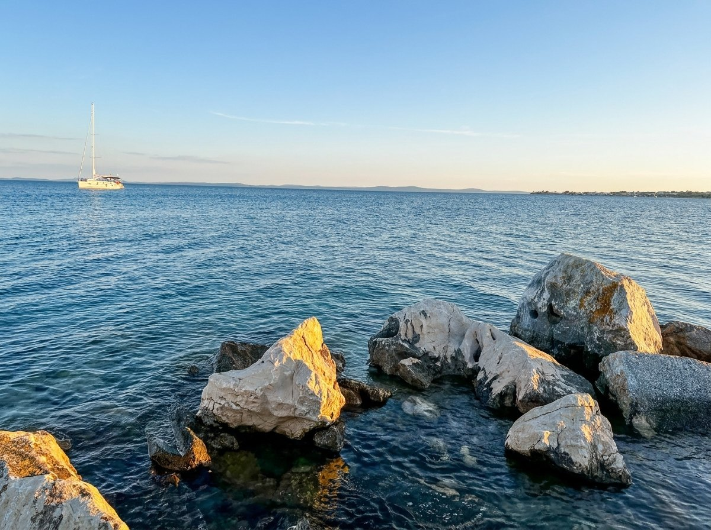
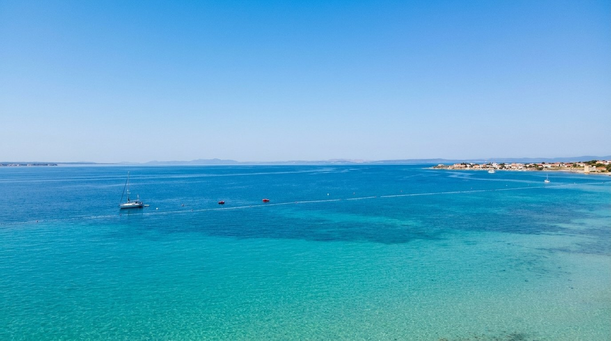
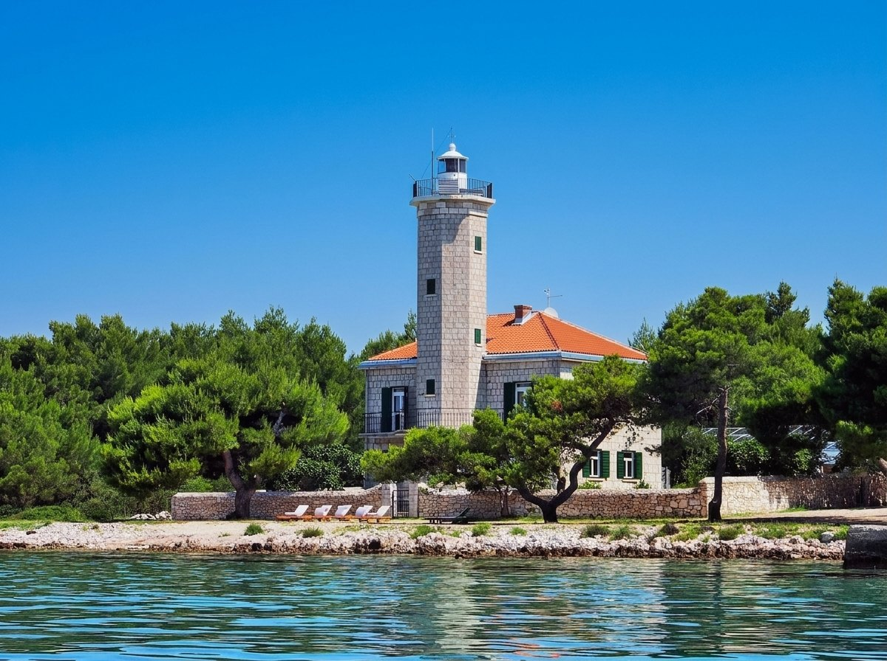
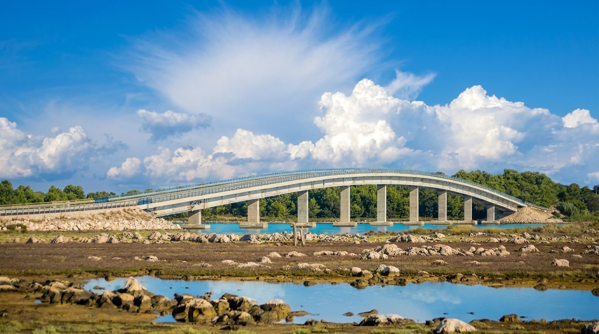
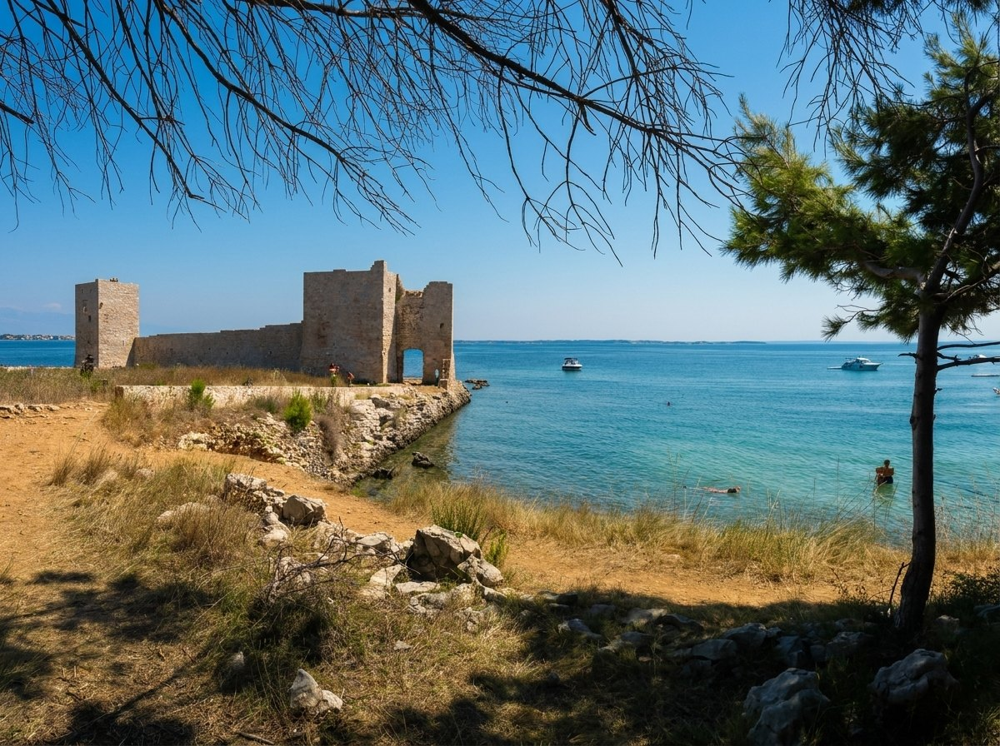
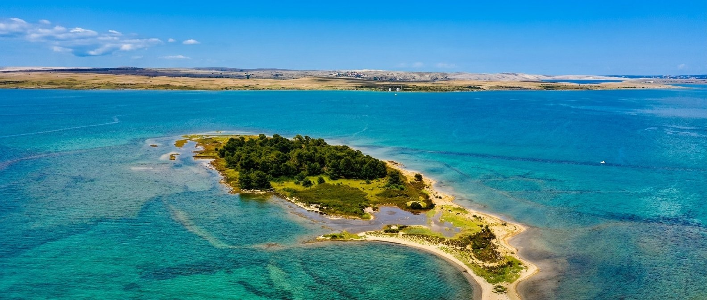

Vir leží v Severnej Dalmácii, asi 30 km severne od Zadaru, a s pevninou ho spája krátky most — žiadne trajekty, žiadne čakanie. Prídete autom až pred dom.
Ostrov, ktorý sa nesnaží byť viac, než je
Mapa okolia
Pláže v okolí
Najznámejšia pláž pri meste Vir. Štrkový podklad s piesočnatým dnom, požičovne člnov a skútrov, ležadlá, slnečníky a reštaurácie.
Kamenná pláž s plytkou vodou blízko mesta. Dosť miest, kde si medzi kúpaním niečo zahryznete.
Na severovýchode ostrova. Velika a Mala Slatina aj Lučica sú vhodné pre rodiny, s požičovňou vybavenia a kaviarňami.





Nenáročná cyklotrasa vedie pozdĺž pobrežia okolo piesočnatých a kamienkových pláží lemovaných borovicovými lesmi, s výhľadom na Pag a Velebit. Dá sa napojiť aj na trasu smerom ku kráľovskému mestu Nin.
Pre aktívnejších je výzvou zdolať turistické chodníky v kamenistých pohoriach — alebo si jednoducho dať pomalú prechádzku po ostrove pri západe slnka.





Chute a nákupy
Zadarská tržnica v srdci mesta — miestnymi volaná „Pijaca“ — je trh pod holým nebom plný farieb, zvukov a vôní. Ovocie a zelenina od miestnych pestovateľov, vedľa rybí trh, kde rybári predávajú denný úlovok.
Na samotnom ostrove nájdete krčmičky s lokálnymi surovinami a plážové kaviarne — ideálne na pomalý obed medzi dvoma kúpaniami.
Spýtať sa na tipyPozrite si, kedy je vila voľná, a napíšte nám. Radi poradíme aj s trasou, plážami a reštauráciami.